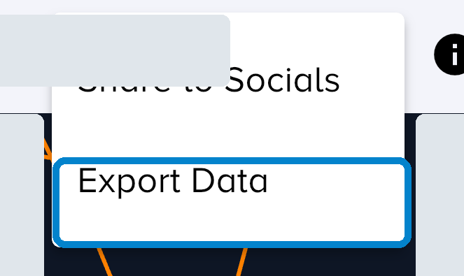
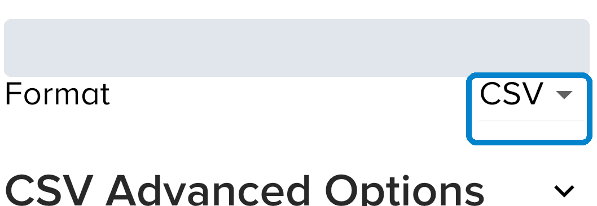
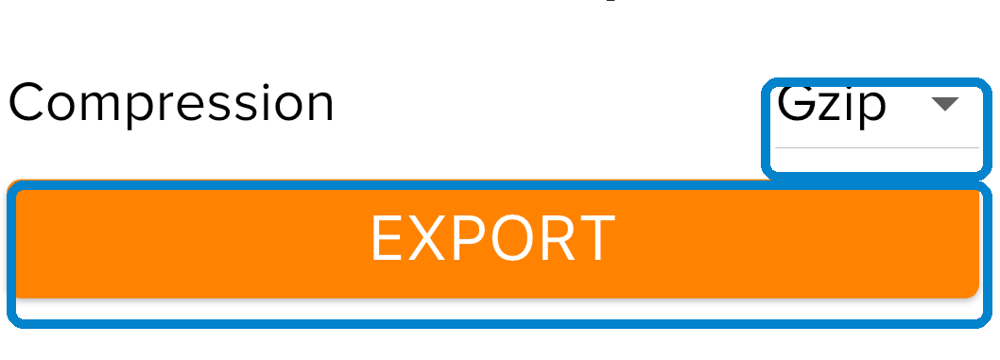
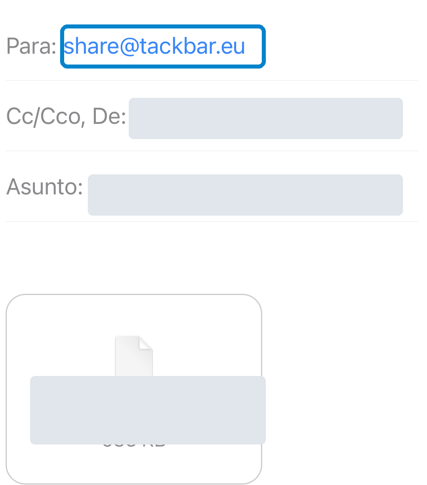

SHARE
How to share your Vakaros activity with TackBar
From Vakaros Connect to the debrief in under two minutes.
When you finish sailing, export the activity from Vakaros Connect and email it to share@tackbar.eu.
-
Open the activity and tap Share
Open the sailing activity you want to share and tap the share/export icon next to the information icon.
-
Choose Export Data
In the Vakaros Connect menu, select Export Data.

-
Export as CSV
Under Format, select CSV. Choose the time range you want to share.

-
Compress and export
Select Compression: Gzip and tap EXPORT.

-
Email it to share@tackbar.eu
Vakaros prepares the email, attaches the file and fills in the subject automatically. Check the recipient and send it.

Before sending
- Check that the recipient is share@tackbar.eu.
- Send from the same email address you use to take part in the pilot.
- Send one email for each activity you want to share.
- Do not decompress the
.csv.gzfile.
Recommended fields
Under CSV Advanced Options, include: SOG, COG, HDG (True), Heel, Trim and Quaternion.
Need help?
Reply to the pilot consent email and we’ll help you.
TackBar is an independent open-source project and is not affiliated with or endorsed by Vakaros or any other device manufacturer.